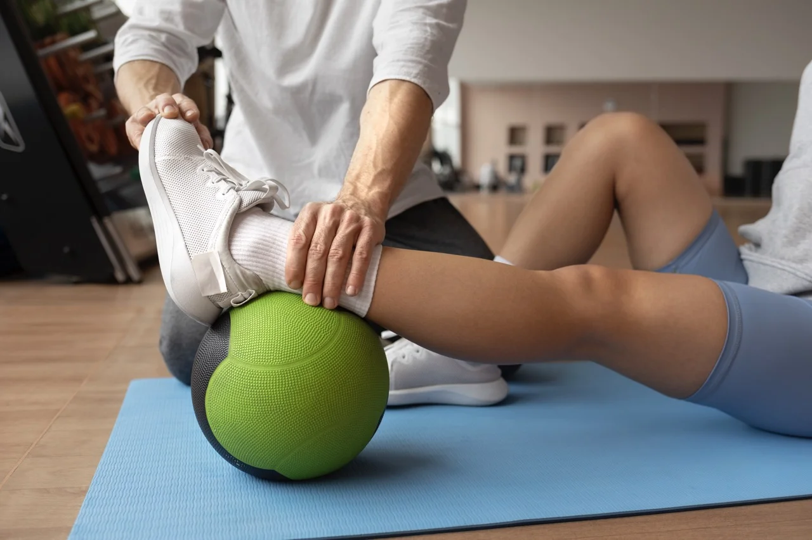
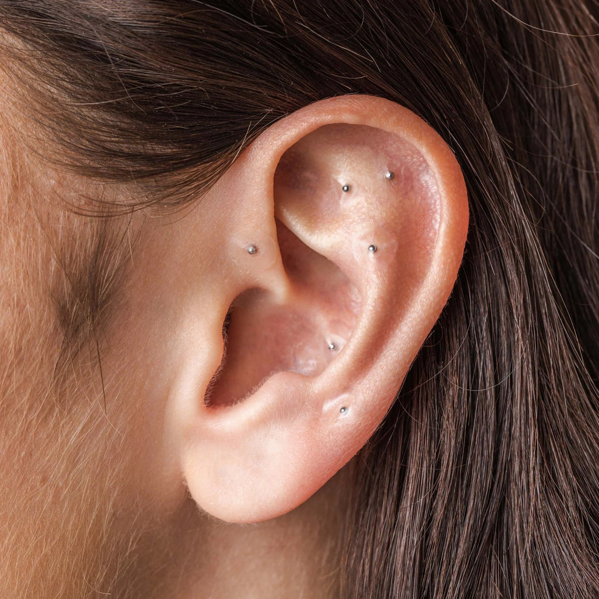

Especialidades

Fisioterapia Esportiva
Reabilitação Pós-Cirúrgica
Terapia Manual

Auriculoterapia
Drenagem Linfática
Depoimentos
"Excelente profissional! Me ajudou muito na minha recuperação."
- Ana Souza
"Recomendo a todos que buscam um atendimento humanizado e eficaz."
- João Santos
"Meu movimento foi totalmente restaurado após as sessões."
- Maria Oliveira
Contato
Telefone: (11) 91234-1234
Email: fisi@fisio.com
Endereço: Rua da Sorte, 123 - Jd Ouro - São Paulo - SP
 LinkedIn: linkedin.com/in/seuperfil
LinkedIn: linkedin.com/in/seuperfil
 Download do Currículo: Baixar Currículo
Download do Currículo: Baixar Currículo